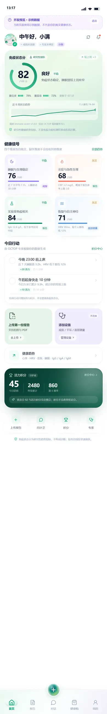
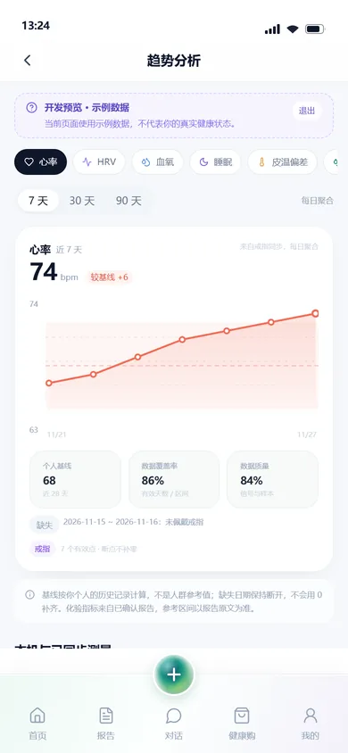
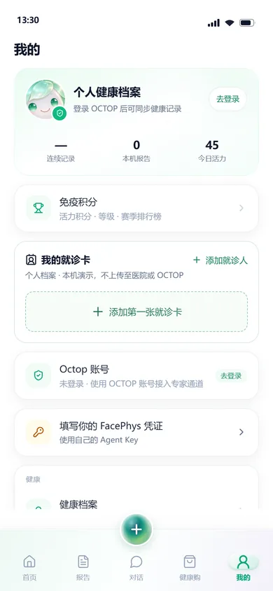
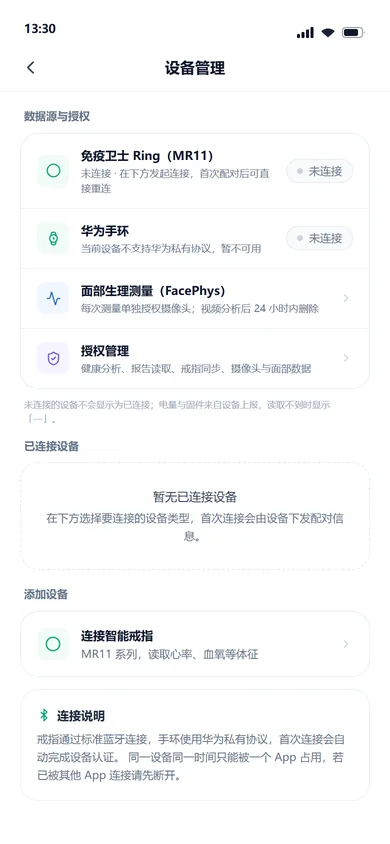
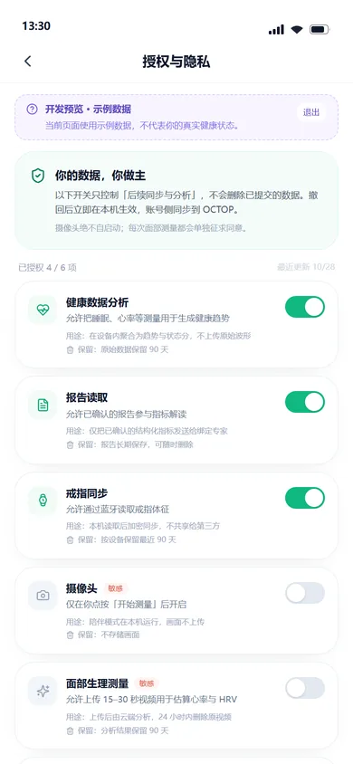
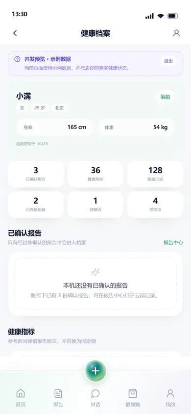

免疫卫士 Ring（MR11）已上线
蓝牙连接稳定，是当前主力推荐设备。
- 已验证
- 心率、血氧、皮温、HRV、睡眠
- 连接方式
- App 内蓝牙配对，自动同步
- 适用
- 购买戒指的用户可立即使用
首页产品功能
产品功能
下面是免疫卫士 App 里实际存在的功能。我们按真实实现状态分成三类，并配上 App 的真实界面截图——不是概念图。
所有截图中的分数、心率、HRV、睡眠时长均为演示数据，不代表任何真实用户。
打开 App 看到的第一屏。上面是免疫状态分，下面是四类身体信号和今天的行动建议。你不用翻很多页，一眼就知道今天该关注什么。

小卫能结合你的档案、报告和趋势回答问题，而不是泛泛地讲健康知识。支持打字、语音输入和发送图片附件。
小卫不是医生。它可以解释指标、整理资料、追踪变化，但不会给出诊断结论，也不会告诉你该吃什么药。
把体检报告拍照上传。App 先在本机识别文字，然后必须由你核对确认才会保存和解读。这个「你先核对」的步骤是刻意设计的：OCR 会出错，检验单上的数字不该由机器说了算。
把戒指每天的记录和体检报告按时间放在一起看。重点不是某一天的高低，而是相对你自己的基线有没有持续变化。

基础信息、历史报告、设备记录都归在一个档案里。它是小卫理解你情况的依据，也是你随时可以查看和导出的东西。

免疫卫士通过蓝牙读取穿戴设备的数据。不同设备的接入进度差别很大，我们如实列出每一步到了哪里。
蓝牙连接稳定，是当前主力推荐设备。
已能连上并读到部分数据，但心率尚未验证通过，连接还不够稳定。
华为手环的真实协议接入尚未完成。我们不会把内测中的设备写成「已支持」。如果你主要用手环，建议等正式版发布后再购买会员或戒指。

你的健康数据属于你。免疫卫士把数据用途拆成六类，每一类都要你单独同意才能开启，并且随时可以撤回。撤回是真正的撤回——不是「隐藏」。

大部分数据由设备自动同步。偶尔漏掉的日子（比如忘记戴戒指），你可以手动补录，补录的数据会明确标注来源，不和设备数据混在一起。

这些功能已经进入开发，但还没有达到可以日常使用的程度。我们列出它们，也列出还差什么。
通过短问卷评估近期疲劳程度。客户端已完成，服务端量表配置尚未就绪。
依赖：服务端规则集配置
每日任务、积分与等级的前端已完成，服务端赛季与规则配置尚未上线。
依赖：服务端赛季 / 规则集配置
组队与排行榜的前端已完成，服务端接口尚未开放。
依赖：服务端小队接口
通过摄像头估算生理指标的实验性功能，精度有限，仅用于研究性参考。
状态：内测 · 需要相机授权
目前只有 Android 版本。iOS 版本尚未发布。
状态：规划中
| 功能 | 状态 | 你现在能用到什么 | 还差什么 |
|---|---|---|---|
| 健康工作台 | 已上线 | 状态分、四信号、今日行动展示 | — |
| AI 助手小卫 | 已上线 | 对话、语音、附件、历史记录 | — |
| 体检报告解读 | 已上线 | 拍照识别、核对、逐项解读 | — |
| 健康趋势 | 已上线 | 7 / 30 天趋势、来源标注 | — |
| 个人健康档案 | 已上线 | 资料、报告、记录集中管理 | — |
| 隐私与授权 | 已上线 | 六类授权开关、撤回 | — |
| 记录与补录 | 已上线 | 按日查看、手动补录 | — |
| 智能戒指 MR11 | 已上线 | 心率、血氧、皮温、HRV、睡眠 | — |
| 华为手环 Band 11 | 内测中 | 电量、步数、卡路里、睡眠 | 心率协议、连接稳定性 |
| 疲劳量表 | 内测中 | 客户端问卷 | 服务端量表配置 |
| 活力积分 / 等级 | 内测中 | 客户端展示 | 服务端赛季与规则配置 |
| 好友小队 | 内测中 | 客户端界面 | 服务端接口 |
| FacePhys | 内测中 | 实验性面部检测 | 精度验证 |
| iOS 版本 | 即将推出 | — | 尚未发布 |